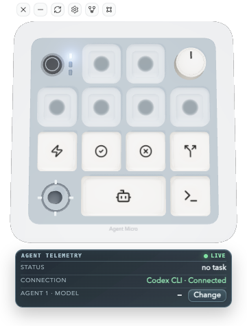
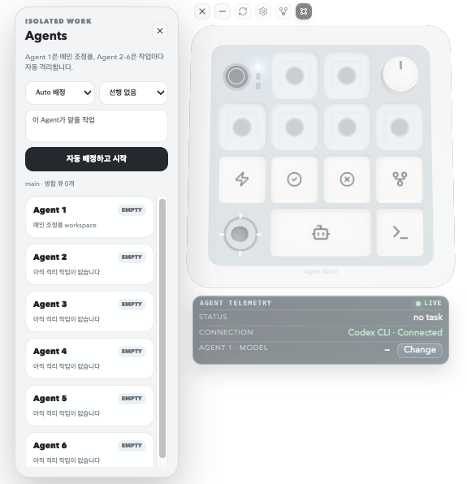

SELECTED AGENT · 01 LIVE
MODELGPT-5.6Change
모든 조작은 지금 선택한 에이전트에만 전달됩니다.
모델을 바꾸고, Fast 모드를 켜고, 승인 요청에 답하는 일까지. 자주 쓰는 기능을 버튼과 단축키에 모아 작업 흐름을 끊지 않습니다.

EVERYDAY CONTROLS
터미널 명령과 설정 파일을 오갈 필요 없이, 플로팅 패드나 원하는 단축키로 바로 실행하세요.
모든 조작은 지금 선택한 에이전트에만 전달됩니다.
SETTINGS WITHOUT CONFIG HUNTING
모델과 추론 강도, 샌드박스, 승인 정책, 에이전트 규칙을 한 화면에서 관리하세요. 변경 전 설정은 자동으로 백업해 언제든 되돌릴 수 있습니다.
USAGE & RESET AT A GLANCE
현재 세션과 오늘, 이번 달 사용량을 한눈에 확인하세요. 다음 리셋까지 남은 시간과 오늘 사용해도 좋은 권장량도 함께 계산해 줍니다.
RESOURCE GUARDRAILS
사용량을 직접 차단할 수는 없지만, 로컬 목표와 경고를 설정해 과도한 사용이나 끝나지 않는 작업을 일찍 알아챌 수 있습니다.
앱 메모리가 기준을 넘으면 경고
지정한 시간을 넘긴 에이전트 작업 경고
동시에 실행할 에이전트 수 설정
실험적 토큰 추적과 알림 간격
컨텍스트 자동 압축 기준
도구 호출별 최대 대기 시간
GitHub는 선택 사항입니다. 건너뛰어도 로컬 Git과 Codex는 그대로 사용할 수 있습니다.
✦ 변경 내용을 읽고 커밋 메시지 자동 생성
LOCAL GIT · OPTIONAL GITHUB
Mac의 로컬 Git은 곧바로 사용하고, GitHub는 첫 실행이나 Settings에서 선택적으로 연결하세요. 작업 중에는 변경 파일 확인부터 스테이징, Pull·Push, 커밋까지 앱 안에서 처리할 수 있습니다.
WHEN ONE AGENT ISN'T ENOUGH
혼자 처리하기 벅찬 작업은 여러 에이전트에 나눠 맡기세요. 1번 에이전트는 main을 지키고, 나머지는 서로 분리된 작업 공간에서 안전하게 실행됩니다.

빈 슬롯에 작업과 브랜치, 작업 공간을 생성
실패한 작업은 한 번만 안전하게 다시 시도
앞선 작업이 끝날 때까지 기다린 뒤 병합
역할과 모델, 규칙, 도구, 작업 폴더를 지정
ONE SMALL APP, A LOT OF CONTROL
Agent Micro v1.2.7 · PUBLIC BETA
반복되는 조작은 Agent Micro에 맡기고, 지금 해야 할 일에 집중하세요.
공개 베타입니다. Windows는 Agent.Micro.Setup.1.2.7.exe를 다운로드하세요.